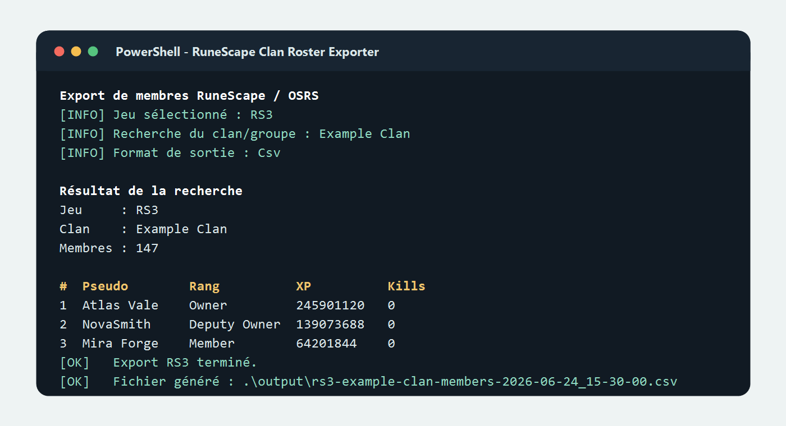

RS3, OSRS ou les deux. Les clans RS3 passent par l'endpoint public Jagex; les groupes OSRS passent par Wise Old Man.
Script PowerShell local
RuneScape Clan Roster Exporter
Récupère les membres d'un clan RuneScape 3 ou d'un groupe OSRS, puis génère un fichier Markdown ou CSV prêt à partager ou archiver.
Version officielle
Vérification en cours
Le statut se met à jour depuis GitHub Releases.
- Fichier
- À venir
- Empreinte SHA256
À venir
En pratique
Trois choix, un export.
Le script peut être lancé en mode interactif ou directement avec paramètres pour une utilisation répétable.
Indiquer le clan ou le groupe à rechercher. Pour OSRS, un identifiant Wise Old Man peut aussi être fourni.
Choisir Markdown ou CSV. Les fichiers sont écrits localement dans le dossier output.

Sorties
Markdown ou CSV, en UTF-8 avec BOM.
Les exports sont pensés pour être ouverts facilement dans Excel, PowerShell ou GitHub.
Colonnes principales
| Colonne | Contenu |
|---|---|
Game |
RS3 ou OSRS |
Clan |
Nom du clan ou du groupe |
Pseudo |
Nom du membre |
Rang |
Rang retourné par la source |
XP |
XP retournée par la source |
Kills |
Valeur RS3 lorsque disponible |
.\Get-RunescapeClanMembers.ps1 `
-Game Both `
-ClanName "Example Clan" `
-OutputFormat CsvSécurité et respect
Sources publiques, traitement local.
L'outil ne demande aucun compte RuneScape et ne téléverse pas les exports générés.
Le script utilise seulement des endpoints publics. Il n'a pas besoin de mot de passe, de jeton ou de clé API.
Les dossiers output et exports, les fichiers de récupération et les temporaires sont exclus du suivi Git.
Les appels sont séquentiels, avec délai minimal, retries et respect de Retry-After lorsque le service distant le fournit.
Le projet n'est pas affilié à Jagex, RuneScape ou Wise Old Man.
Support
Signaler un problème ou proposer une amélioration.
Indiquez le jeu ciblé, le format demandé, la version PowerShell et le message affiché.
Pour suivre une anomalie ou une idée d'évolution publiquement.
Ouvrir un billetLe script, la documentation et la licence sont disponibles dans le dépôt public.
Voir le dépôtLe développement peut être soutenu par GitHub Sponsors.
Sponsor GitHub